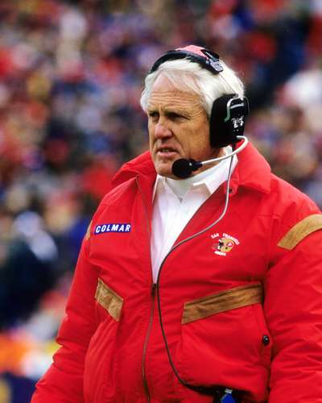

49er History

The San Francisco 49ers were established in the All-American Football Conference (AAFC) in 1946. The team had a winning record in each of its first four years, but it could not displace the dominant Cleveland Browns, who won every championship in the four seasons of the AAFC. After the AAFC merged with the NFL in 1950, the 49ers struggled through their first losing season. Despite the presence of five future Hall of Famers—quarterback Y.A. Tittle, running backs Hugh McElhenny and Joe Perry, tackle Bob St. Clair, and defensive lineman Leo Nomellini—the 49ers were mostly unsuccessful during the 1950s, advancing to the postseason only once, in 1957. San Francisco began a string of 12 consecutive seasons without a playoff berth in 1958. One of the most noteworthy players on the team during the 1960s was running back Dave Kopay, who in 1977 became the first athlete from a major American team sport to publicly acknowledge that he was a homosexual. A resurgent 49ers squad under the guidance of head coach Dick Nolan and led by quarterback John Brodie advanced to the NFC championship game in both 1971 and 1972 but lost to the Dallas Cowboys on both occasions.
The 49ers ascendancy began in 1979 when quarterback Joe Montana was drafted by new head coach Bill Walsh. Upon his arrival in San Francisco, Walsh installed his innovative “West Coast offense,” which relied on a series of quick, accurate passes and was a perfect fit for Montana’s skills. San Francisco rebounded from a 2–14 record in Walsh’s first year to the franchise’s first Super Bowl win in his third. The 49ers’ title run was highlighted by a last-second victory over the Cowboys in the NFC championship game off a brilliant touchdown pass from Montana to wide receiver Dwight Clark, which was immortalized as “The Catch.” The 49ers lost to the Washington Redskins in the 1984 NFC championship game, but they lost only one game the following year and returned to the Super Bowl, where they easily defeated the Miami Dolphins. In the 1985 NFL draft, the team selected wide receiver Jerry Rice, who would team with Montana to create one of the most prolific passing duos in NFL history on his way to breaking every major career receiving record. After guiding the 49ers to a third Super Bowl win in 1989, Walsh retired and handed head-coaching duties to his defensive coordinator, George Seifert.
Joe Montana

Joseph Clifford Montana Jr. (born June 11, 1956), nicknamed "Joe Cool"[1] and "the Comeback Kid",[2] is an American former professional football player who was a quarterback in the National Football League (NFL) for 16 seasons with the San Francisco 49ers and Kansas City Chiefs.[3] After winning a national championship at Notre Dame, Montana started his NFL career in 1979 with San Francisco, where he played for the next 14 seasons.[4] While a member of the 49ers, Montana started and won four Super Bowls and was the first player ever to have been named Super Bowl Most Valuable Player three times. He also holds Super Bowl career records for most passes without an interception (122 in four games) and the all-time highest passer rating of 127.8. In 1993, Montana was traded to the Kansas City Chiefs where he played his final two seasons, and led the franchise to its first AFC Championship Game in January 1994. Montana was elected to the Pro Football Hall of Fame in 2000, his first year of eligibility.[5]
In 1989, and again in 1990, the Associated Press named Montana the NFL Most Valuable Player (MVP), and Sports Illustrated magazine named Montana the 1990 "Sportsman of the Year".[6] Four years earlier, in 1986, Montana won the AP NFL Comeback Player of the Year Award.[7] Montana was elected to eight Pro Bowls, as well as being voted 1st team All-Pro by the AP in 1987, 1989, and 1990. Montana had the highest passer rating in the National Football Conference (NFC) five times (1981, 1984, 1985, 1987, and 1989); and, in both 1987 and 1989, Montana had the highest passer rating in the NFL.[8]
Among his career highlights, "The Catch" (the game-winning touchdown pass vs. Dallas in the 1981 NFC Championship Game) and a Super Bowl-winning 92-yard drive against the Bengals in Super Bowl XXIII are staples of NFL highlight films.
The 49ers retired the number 16, the jersey number Montana wore while with the team. In 1994, Montana earned a spot on the NFL 75th Anniversary All-Time Team; he is also a member of the NFL 1980s All-Decade Team. In 1999, editors at The Sporting News ranked Montana third on their list of Football's 100 Greatest Players. Also in 1999, ESPN named Montana the 25th greatest athlete of the 20th century. In 2006, Sports Illustrated rated him the number-one clutch quarterback of all time.[9]